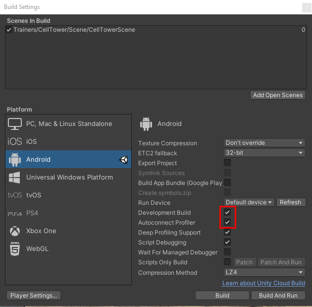

ЛОГИЧЕСКАЯ СХЕМА АНАЛИЗА ПРОЕКТА СРЕДСТВАМИ PROFILER UNITY
Логика анализа скриптов
СОБЕРИТЕ БИЛД
Соберите билд, на целевом устройстве, с параметрами отмеченными на скриншоте.
ЗАПИШИТЕ ФРАГМЕНТ
Запишите проблемное место (там где проседает FPS) во фрагмент, с помощью ProfilerUnity, для этого нужно что бы устройство было подключено проводом к PC с UnityProfiler или находиться в одной Wifi сети с ним, после подключения в выпадающем окошке появится это устройство, выберите его. Нажмите кнопку записи на интересующем вас фрагменте при запущенном проекте.
ИЗУЧИТЕ ЗАПИСАНЫЙ ФРАГМЕНТ
Найдите пики наихудшей производительности в этом фрагменте
ПРОВЕДИТЕ АНАЛИЗ ВЫЗЫВАЕМЫХ ФУНКЦИЙ ВО ФРАГМЕНТЕ
Необходимо найти функции которые ответственны за появления пиков ухудшения производительности, ориентируясь на показатель процента загруженности CPU
С выявленными функциями необходимо провести работу по рефакторингу и оптимизации, если это возможно